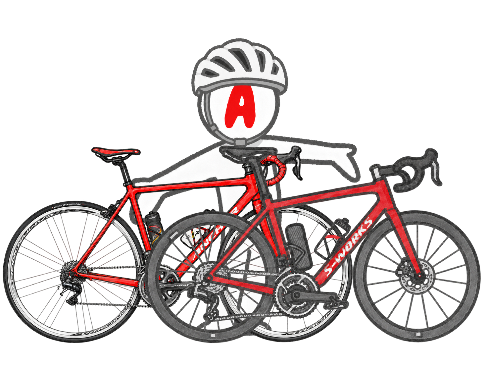

EXPERIMENTS
6つの実験
外ライド、ローラー、食事、機材、旧ブログのリメイクをここに整理します。毎日の記録より、変化が出た実験を優先します。

TEST 01
外ライド・実走
友人ライド、CR、太平山、気分転換の実走など。ローラーでは見えない脚の重さ、補給、機材の感触をまとめます。
Garminに無酸素不足と言われたので、330W以上でゴルビーしてきた 太平山317Wより、帰りのストレート280Wが収穫だった日 唐沢5分337W、琴平12分305W。ローラー後でも外なら踏めた 唐沢ライドで尻が限界。パワーより痛みが勝った日 心拍計を付けて太平ライド。レスト明けでもTSS120 友人と渡良瀬CRへ。回復走でもTSS83
TEST 02
ローラー練習
Sweet Spot、VO2、20分走、FTP測定など、RNC7基準のワットと体感を記録します。数字だけでなく、翌日の脚と尻も見ます。
Garminに無酸素不足と言われたので、AIと明日のメニューを決めた 3分のはずが4分。VO2ローラーを間違えて高難度にした日 SST20分×2。ローラーで250W台を崩さず踏めた日 VO2ローラーで4本目に撃沈。でも9分テンポは踏めた 雨なのでローラー。SST2本目で心拍が持たなかった日 15分270W×2のローラー実験を見る 20分285W。15分までは行けると思ったが、そこから地獄だった
食事と補給
ライド日のご飯量、プロテイン、バナナ、レーズンパン、マスカルポーネなどを試します。減量より回復を優先します。
プロテインを最安だけで選ばなかった話 脚が重いので、ご飯300g実験を開始した機材とアイテム
Aethos2、RNC7、Tarmac SL6、ホイール、パワーメーター、補給食、ウェアなど。旧ブログの機材記事も今の目線で再評価します。
Aethos2乗りが、富士ヒル目線でSL8と比べてみた iGPSPORT HR70レビュー。胸ベルトが苦手でも心拍が取れた Aethos2のステムキャップをWolfTooth MK0に交換 リメイク案: Tarmac SL6を今読み直す旧ブログ発掘
旧ブログ「ロードバイク時々マウンテン」をWayback Machineから発掘。昔の自分の記事に、今の自分とAIがツッコミを入れます。
旧ブログ発掘室へ 旧ブログを掘り返したら、219本の記事と523枚の画像が出てきた 昔の富士ヒル追い込み論を、今の方針で読み直す体重とコンディション
体重、体脂肪率、睡眠、疲労感、脚の重さを単発ではなく傾向で見ます。家庭用体組成計の数字は絶対値ではなく流れで扱います。
酒も菓子もやめたのに、お腹だけ残る問題 自転車とは別枠で始めた毎日筋トレが、登りに効いている気がしてきた 尻が痛くて自転車休み。代わりにジョギングした日 ロードバイクで強くなるために、休む日を作った